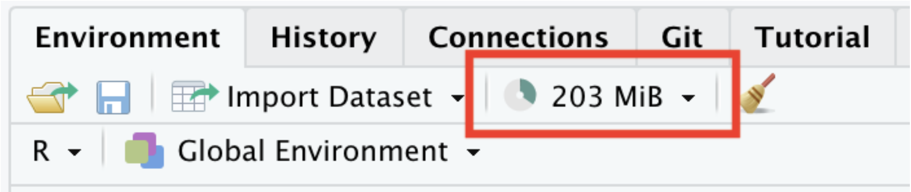
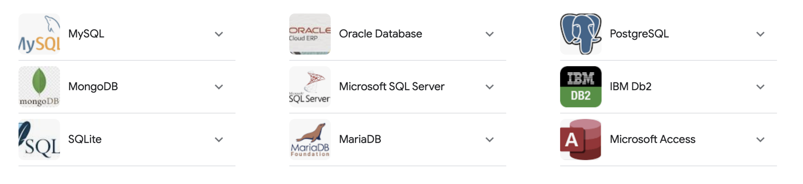

![]()
03:00
PSTAT 10 Data Science Principles
Lecture 13: Databases
September 1, 2026
Introduction
🔁 Review: Lectures 9 – 12
🤔 This week we will move away from the language R and instead focus on SQL.
- The following lectures will (explicitly) use minimal R.
- It is still important to be comfortable with topics such as simulation, random variables and Monte Carlo methods.
📌 The bulk of the final exam will focus on the language R. Assignment 5 and the last labs will also use R.
👀 Outline: Lecture 13
👇 In today’s lecture we will introduce ourselves to larger, more complex database structures. We aim to answer the questions:
- What is a database?
- What is a relational database?
- What is a database management system (DBMS)?
Furthermore we will cover the relational model, both the:
- Structural portion; and
- Integrity portion
Databases
🗄️ What is a Database?
A database is an organized collection of structured information, or data, typically stored electronically in a computer system.
- Medical records
- Bank accounts
- Credit histories
- Historical security prices
- Census data
- Airline schedules and bookings
- Bus and train timetables
- Student records
- Customer purchasing histories
- Medical trial data
📌 Essentially anything can be stored as a set of related data values.
🗄️ Why Do We Use Databases?
We have to when datasets get incredibly large.
For example, a standard Excel document can store roughly:
- 1 million rows
- 16000 columns
Most Excel documents however are much smaller, around 0.5MB to 1MB.
What happens if we are dealing with a very large dataset?
🗄️ Example — Why Do We Use Databases?
Consider the nycflights13 data from previous weeks.
This is still a fairly small dataset. Really large datasets can be many (GB) or even (TB).
For example:
- High-frequency securities data
- Medical trials data
- Advertising data
💾 Memory Usage
If we import a large dataset into R, then we are storing that data in our computer’s memory.
In our environment tab in RStudio we can see a read-out of the amount of memory we are currently using.

📌 RStudio can only use so much memory before computer performance declines rapidly with high memory usage.
💪 Exercise — Available Memory
- Determine how much random access memory (RAM) your computer has.
- For Macs go to
Apple -> About This Mac -> Memory - For Windows go to
Task Manager -> Performance -> Memory
- For Macs go to
- Determine how much memory
Rhas available.- Explore
?gc. - Run
gc()(results will vary!)
- Explore
✅ Solution — Available Memory
My Mac has 1TB of storage and 16GB of RAM (which is starting to lag behind 2026 laptops now).
- The
usedcolumns report the memoryRis currently occupying. - The
max usedcolumns report the peak usage so far this session. - Values are shown for both
Ncells(objects) andVcells(vectors/data).
📦 Too Much Data
The table below details several databases that are too large to load into R.
| File Number | File Name | Size |
|---|---|---|
| 1 | Diabetic Retinopathy Detection | 82.2 GiB |
| 2 | American Epilepsy Society Seizure Prediction Challenge | 59.6 GiB |
| 3 | Avito Duplicate Ads Detection | 48.4 GiB |
| 4 | Microsoft Malware Classification Challenge (BIG 2015) | 35.3 GiB |
| 5 | GE Flight Question | 34.4 GiB |
🗄️ Dealing with Big Data
Our approach:
- Store the data on an external disk
- Open a connection to the data
- Load portions of the data into local memory as needed
- The dataset stored on this disk is a database
📌 We only ever hold what we need in memory — the connection lets us query a database far larger than our RAM.
📖 Formal Definitions
We defined a database earlier as an organized collection of structured information, or data, typically stored electronically in a computer system.
Our databases will satisfy the following two traits:
- They will be machine-updatable (i.e. a collection of variables).
- They will be logically coherent (i.e. they will have some understandable organizational structure).
🖥️ Database Management Systems (DBMS)
We manage databases through Database Management Systems (DBMS).
There are four main types:
- Hierarchical
- Network Model
- Relational Model
- Object-Oriented Model
Broadly, we can classify DBMS into:
- Relational Database Management Systems (RDBMS); and
- Non-Relational Database Management Systems (NoSQL).
🖥️ Databases in PSTAT 10
In PSTAT 10 we will specifically work with Relational Databases.
- The most common databases used in industrial settings.
- Easy to interface with using structured query language (SQL).
- Secure and very flexible design.
- Easy to maintain, been in use for over 50 years.

Relational Database Model
🧩 Relational Database Model Parts
We divide the relational database model into three parts:
- Data structure
- Data integrity
- Data manipulation
📌 Today we discuss data structure and data integrity.
📖 Core Definitions
We will consider the following definitions:
- Relation: table of columns and rows (“table”)
- Attribute: column of a relation
- Domain: allowable attribute values
- Tuple: row of a relation
- Keys (Super, Candidate, Primary, Foreign): identifiers
🧩 Relational Databases
A relational database is a collection of structured data organized into relations.
For example, see the table below:
| StudentId | FirstName | Course# |
|---|---|---|
| S1 | Remy | PSTAT8 |
| S1 | Remy | PSTAT131 |
| S2 | Sam | PSTAT10 |
| S3 | Taylor | PSTAT131 |
| S4 | Jordan | PSTAT174 |
🔎 Interpretation
| StudentId | FirstName | Course# |
|---|---|---|
| S1 | Remy | PSTAT8 |
From the first row we see that a student with ID S1, named Remy, is enrolled in PSTAT8.
- What other information can we see?
- What other course is Remy enrolled in?
- Who does Remy share a course with?
🧩 Relations
Relations have the following properties:
- Order is irrelevant;
- Each row (tuple) must be unique;
- Every relation must have a unique name; and
- Relations can be updated (tuples added) as desired.
🧩 Relation Attributes
| StudentId | FirstName | Course# |
|---|---|---|
| S1 | Remy | PSTAT8 |
- The heading values are all attributes, i.e.
StudentId,FirstName,Course#. - The attribute values are in the columns.
- Rows are called tuples.
- Structurally relations are very similar to data frames in R.
🌐 Domains and Tuples
The domain of a relation attribute is the set of atomic values used to model that attribute’s data.
- Every relation attribute is linked to a domain.
- For example, the domain for
Course#would bePSTAT5A, PSTAT5LS, PSTAT8, PSTAT10, ...
- Note that this is the set of all values a relation attribute can take — the values themselves do not have to be present in the relation.
- The tuples are all of the non-header rows.
Keys
🔑 Keys
Keys are (subjectively) the most important structural component of the relational model.
A key is a set of attributes that determine the other attributes in each tuple, establish and identify links between relations, and set any required constraints on a database.
🔑 Super Keys
| StudentId | FirstName | Course# |
|---|---|---|
| S1 | Remy | PSTAT8 |
| S1 | Remy | PSTAT131 |
| S2 | Sam | PSTAT10 |
| S3 | Taylor | PSTAT131 |
| S4 | Jordan | PSTAT174 |
A super key is a set of attributes uniquely identifying a tuple in a relation.
💪 Exercise — Super Keys
03:00
| StudentId | FirstName | Course# |
|---|---|---|
| S1 | Remy | PSTAT8 |
| S1 | Remy | PSTAT131 |
| S2 | Sam | PSTAT10 |
| S3 | Taylor | PSTAT131 |
| S4 | Jordan | PSTAT174 |
Which of the following are super keys?
(StudentId, FirstName, Course#)(StudentId, FirstName)(StudentId, Course#)(StudentId)
✅ Solution — Super Keys
| StudentId | FirstName | Course# |
|---|---|---|
| S1 | Remy | PSTAT8 |
| S1 | Remy | PSTAT131 |
| S2 | Sam | PSTAT10 |
| S3 | Taylor | PSTAT131 |
| S4 | Jordan | PSTAT174 |
The following are both super keys:
(StudentId, FirstName, Course#)(StudentId, Course#)
- A super key must uniquely identify every tuple.
Remy(S1) appears in two rows, so(StudentId)and(StudentId, FirstName)are not super keys — they cannot tell those rows apart.- Adding
Course#distinguishes the tuples, so any set containing it uniquely identifies a row.
🔑 Candidate Keys
| StudentId | FirstName | Course# |
|---|---|---|
| S1 | Remy | PSTAT8 |
| S1 | Remy | PSTAT131 |
| S2 | Sam | PSTAT10 |
| S3 | Taylor | PSTAT131 |
| S4 | Jordan | PSTAT174 |
A candidate key is a unique tuple identifier (super key) with no redundancy.
Consider the previous example’s super keys:
{StudentId, FirstName, Course#} & {StudentId, Course#}
- These two keys encode (effectively) the same information.
- The
FirstNameattribute is redundant; both attribute sets point to the same tuple. - Only
{StudentId, Course#}is a candidate key.
🔑 Primary Keys
A primary key is a set of attributes that uniquely identifies any tuple in a given relation.
- Each relation has one primary key, selected from the candidate keys.
- The primary key is chosen to minimize the number of attributes.
- Primary keys cannot be duplicated, i.e. the same primary key cannot refer to multiple relations.
- Primary key values cannot be
null.
📌 In our previous example {StudentId, Course#} was the primary key for ENROLLMENT.
🔑 Foreign Keys
A foreign key is a set of attributes that links attributes across relations.
- Specifically: given two relations
R1andR2, the foreign key links attributes fromR1to those inR2. - This is not intuitive — we will look at an example.
Before we do though, think about why foreign keys might be useful?
- When would we want to link relations?
- What sort of structure does a relational DB take?
🔑 Example — Foreign Keys
| StudentId | FirstName |
|---|---|
| S1 | Remy |
| S2 | Sam |
| S3 | Taylor |
| S4 | Jordan |
Primary Key: {StudentId}
| StudentId | GPA |
|---|---|
| S1 | 3.81 |
| S2 | 3.97 |
| S3 | 3.02 |
| S4 | 2.79 |
Primary Key: {StudentId, GPA}
Foreign Key: {StudentId}
🔑 Key Summary
The structure of keys may remind you of the basics of set theory:
- Super Keys contain Candidate Keys.
- Candidate Keys contain Primary Keys.
Written in the language of set theory we have that:
\[ \{\text{Super Keys}\}\supset \{\text{Candidate Keys}\}\supset \{\text{Primary Keys}\} \]
Foreign keys link relations together.
Data Integrity
🔒 Data Integrity
The first portion of this lecture was focused on data structure, i.e.:
- Organization of databases; and
- Technical vocabulary.
The next portion focuses on data integrity:
- The rules all relational databases must obey.
- Requirements to ensure consistency and completeness.
- Integrity rules:
- Entity
- Referential
🔒 Entity Integrity
A relation has entity integrity when its primary keys are unique and have values that are unique and not NULL for every attribute (column).
📌 Entity integrity ensures we do not have (potential) duplicate tuples in a relation.
- How would duplicates impact storage?
- How would they impact accessing data?
- How would they impact the role of primary keys?
🔒 Example — Entity Integrity
| StudentId | FirstName | Course# |
|---|---|---|
| S1 | Remy | PSTAT8 |
| S1 | Remy | PSTAT131 |
| S2 | Sam | PSTAT10 |
| S3 | Taylor | PSTAT131 |
| S4 | Jordan | PSTAT174 |
Primary Key: {StudentId, Course#}
Suppose we want to add a new student named Sam who is enrolled in PSTAT174.
- Could we do this?
- If not, what would we still need?
🔗 Integrity Between Relations
We considered two types of keys:
- Super Keys, Candidate Keys, Primary Keys (all referring to a single relation)
- Foreign Keys (linking to multiple relations)
We think of integrity the same way:
- Entity integrity dealt with individual relations.
- Referential integrity constrains relations between relations.
🔗 Referential Integrity
Foreign keys can take two types of values:
- They can be
NULL. - They can correspond to a specific primary key.
Referential integrity ensures that we never attempt to reference a nonexistent tuple.
- Allows for easy cross-referencing across relations.
- Prevents calls to nonexistent data.
🔗 Example — Referential Integrity
| CUST_NO | NAME | Age |
|---|---|---|
| C1 | Alex | 21 |
| C2 | Charlie | 26 |
Primary Key: {CUST_NO}
| ORDER_NO | DATE | CUST_NO |
|---|---|---|
| 011 | 6/11/23 | C1 |
| 012 | 6/24/23 | null |
| 013 | 7/1/23 | C3 |
| 015 | 7/12/23 | C2 |
Foreign Key: {CUST_NO}
🔗 Example — Referential Integrity (Note)
Note the third tuple of the SALES_ORDER relation:
\[ \{013,~7/1/23,~C_3\}. \]
In customers, we have CUST_NO values:
\[ \{C_1, C_2\}. \]
📌 Thus referential integrity is violated — we reference a primary key value which does not exist.
💪 Exercise — Evaluating Integrity
04:00
| Product | Price ($) | Category | Manufacturer |
|---|---|---|---|
| Galaxy S23 | 899 | Phones | Samsung |
| null | 829 | Phones | Apple |
| Macbook Air | 1099 | Laptops | Apple |
| Fire TV | 449 | Televisions | Amazon |
| Product | Order_NO | Cust_ID |
|---|---|---|
| Fire TV | 1 | CS1 |
| Galaxy S23 | 2 | CS11 |
| Macbook Pro | 3 | CS11 |
We are given the tables above: ITEMS and ORDERS, with primary keys Product and Cust_ID.
- What is the foreign key in
ORDERS? - Is entity integrity violated? If so, how?
- Is referential integrity violated? If so, how?
✅ Solution — Evaluating Integrity
| Product | Price ($) | Category | Manufacturer |
|---|---|---|---|
| Galaxy S23 | 899 | Phones | Samsung |
| null | 829 | Phones | Apple |
| Macbook Air | 1099 | Laptops | Apple |
| Fire TV | 449 | Televisions | Amazon |
| Product | Order_NO | Cust_ID |
|---|---|---|
| Fire TV | 1 | CS1 |
| Galaxy S23 | 2 | CS11 |
| Macbook Pro | 3 | CS11 |
Product- Yes; entity integrity fails —
nullprimary key inITEMS→Product. - Yes; referential integrity fails —
Macbook ProinORDERS→Producthas no matching tuple.
Schema
📐 Relation Schema
The relation schema is the relation name and its attributes.
| StudentId | FirstName | Course# |
|---|---|---|
| S1 | Remy | PSTAT8 |
| S1 | Remy | PSTAT131 |
| S2 | Sam | PSTAT10 |
| S3 | Taylor | PSTAT131 |
| S4 | Jordan | PSTAT174 |
Schema: Enrollment {StudentId, FirstName, Course#}
- Conventionally, the primary key would be indicated in some fashion.
- Recall that the primary key here was the pair
{StudentId, Course#}; this type of key is known as a composite key.
📐 Database Schema
The database schema is the set of all relation schema in a database.
- New relations can be added at any point.
- New relations must conform to integrity constraints.
For example, the earlier STUDENT and GPA relations together form a database schema:
\[ \texttt{Student \{StudentId, FirstName\}},\quad \texttt{GPA \{StudentId, GPA\}}. \]
📌 The database schema records both the relations and the keys that link them.
Summary
✅ Topics Covered
🙌 This lecture we introduced ourselves to databases, specifically:
- The relational database model
- Keys
- Data Integrity; and
- Schema
📅 Next Class
👉 Next class we will discuss accessing and modifying databases.
- The database schema will form a core reference tool.
- We will often discuss database schema theoretically.